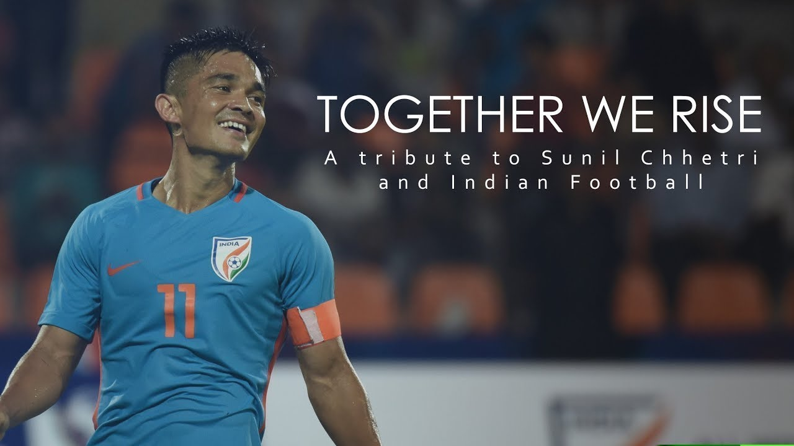

Biography
Sunil Chhetri, born on August 3, 1984, in Secunderabad, India, is a football legend who has left an indelible
mark on the sport. His relentless passion and dedication to football have made him a beacon of inspiration for
aspiring athletes. As the captain of the Indian national team, he has broken records, scored countless goals,
and become the highest-scoring Asian player in international football. Beyond his achievements, Sunil's
humility, sportsmanship, and advocacy for the growth of football in India have earned him the respect of fans
worldwide. He continues to lead by example, reminding us all that with talent and perseverance, dreams can
become reality. Sunil Chhetri's journey is a testament to the power of determination and the impact one
individual can have on the world of sports and beyond.